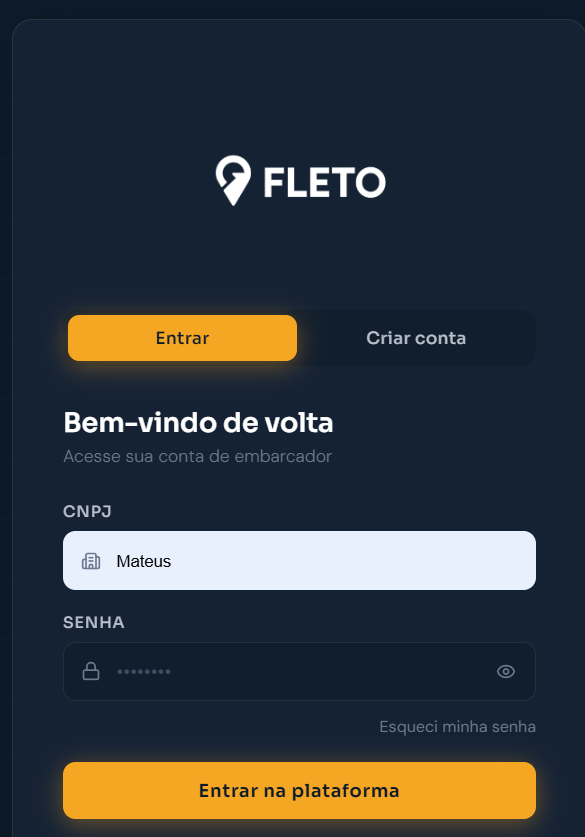

01 · Acesso à plataforma
Ambiente único para clientes e operação.
A Fleto oferece uma experiência centralizada para acesso à plataforma, permitindo que a operação logística seja conduzida em um ambiente próprio, organizado e preparado para evoluir conforme a necessidade de cada cliente.
